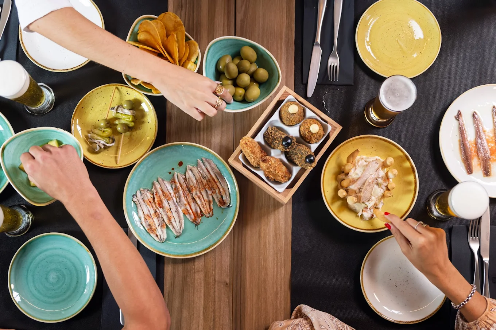
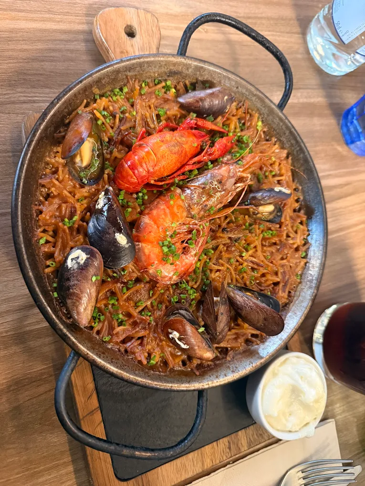

Nuestras Especialidades
Los sabores que definen a ATROZ

ATROZ Burger
Nuestra especialidad de la casa: carne de calidad, ingredientes premium y sabor inconfundible
Ver Menú

Tapeo Variado
Selección cuidada de nuestras mejores tapas para disfrutar en cualquier momento
Ver Menú

Paella y Arroces
Recetas mediterráneas de tradición, preparadas con técnica y ingredientes frescos
Ver Menú